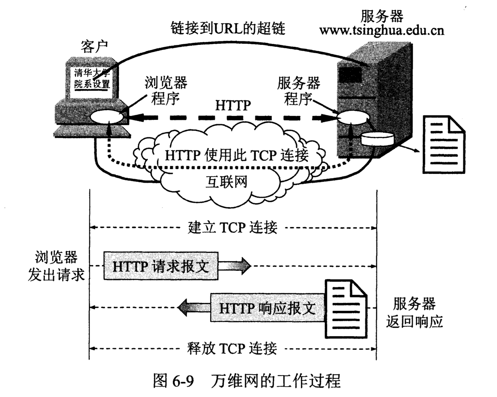
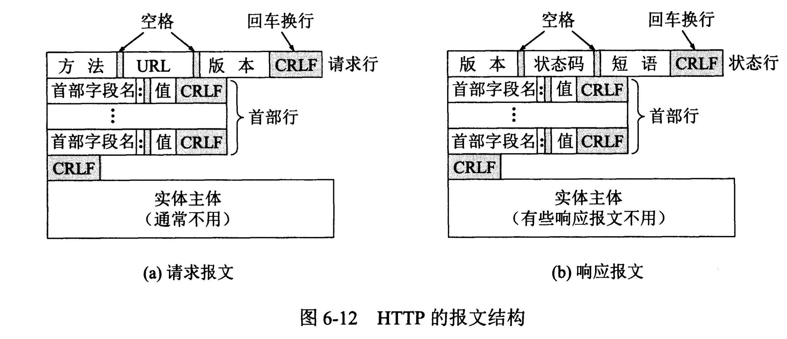

计算机网络/应用层/万维网WWW # 万维网概述 万维网是一个大规模的、联机式的信息储藏所(Web)。万维网是一个分布式的超媒体(hypermedia)系统，它是超文本(hypertext)系统的扩充。 超文本： >包含指向其他文档的链接的文本(text)。超文本是万维网的基础。
超媒体： >与超文本的区别是文档内容不同，还包含其他方式的信息，如图形、图像、声音、动画和视频等。
万维网以客户服务器方式工作。客户程序向服务器程序发出请求，服务器程序向客户程序送回客户索要的万维网文档（页面page）。
| 必须解决的问题 | 解决方法 |
|---|---|
| 如何标志文档 | 统一资源定位符URL |
| 如何实现链接 | 超文本传送协议HTTP |
| 如何显示不同风格的文档 | 超文本标记语言HTML |
| 如何使用户方便的找到所需信息 | 搜索引擎 |
统一资源定位符URL
统一资源定位符URL(Uniform Resource Locator)是用来表示从互联网上得到的资源位置和访问这些资源的方法。URL实际上就是在互联网上的资源的地址。URL相当于一个文件名在网络范围的拓展。 ><协议>://<主机>:<端口>/<路径>
<协议>是指出使用什么协议来获取文档。常用的协议有http，ftp等。 <主机>是指该主机在互联网上的域名。 <端口>http的默认端口是80，通常可忽略。 <路径>文件存放路径，忽略时就指向主页(home page)。 URL里面的字母部分大小写，但为了便于阅读，有时故意使用一些大写字母。 # 超文本传送协议HTTP ## HTTP的工作过程 HTTP协议定义了浏览器（即万维网客户进程）怎样向万维网服务器请求万维网文档，以及服务器怎样把文档传送给浏览器。

每个万维网网点都有一个服务器进程，它不断地监听TCP的端口80，以便发现是否有浏览器（即万维网客户）向它发出连接建立请求。一旦监听到连接建立请求并建立TCP连接之后，浏览器就向万维网服务器发出浏览某个页面的请求，服务器接着就返回所请求的页面作为响应。最后，TCP连接就释放了。 用户在点击鼠标链接某个万维网文档时，HTTP首先要和服务器建立TCP连接，这需要使用三报文握手。当建立TCP连接的三报文握手的前两部分完成后，万维网客户就把HTPP请求报文，作为建立TCP连接的三报文握手中的第三个报文的数据，发送给万维网服务器。服务器收到HTTP请求报文后，就把所请求的文档作为响应报文返回给客户。所以请求一个万维网文档所需的时间是该文档的传输时间（与文档大小成正比）加上两倍往返时间RTT。
HTTP/1.1协议： 1. 使用持续连接。 2. 持续连接有两种工作方式，即非流水线方式和流水线方式。
HTTP的报文结构
HTTP有两类报文： 1. 请求报文 2. 响应报文

由于HTTP是面向文本的(text-oriented)，因此在报文中的每一个字段都是一些ASCII码串，因此各个字段的长度都是不确定的。 HTTP报文都是由三个部分组成的。 1. 开始行，用于区分是请求报文还是响应报文。在请求报文中的开始行叫做请求行(Request-Line)，而在响应报文中的开始行叫做状态行(Status-Line)。 2. 首部行，用来说明浏览器、服务器或报文主体的一些信息。 3. 实体主体。
HTTP请求报文
请求报文的第一行“请求行”只有三个内容，即方法，请求资源的URL，以及HTTP的版本。
| 方法（操作） | 意义 |
|---|---|
| OPTION | 请求一些选项的信息 |
| GET | 请求读取有URL所标志的信息 |
| HEAD | 请求读取有URL所标志的信息的首部 |
| POST | 给服务器添加信息 |
| PUT | 在指明的URL下存储一个文档 |
| DELETE | 删除指明的URL所标志的资源 |
| TRACE | 用来进行环回测试的请求报文 |
| CONNECT | 用于代理服务器 |
GET /dir/index.htm HTTP/1.1{请求行使用了相对URL}
Host: www.xyz.edu.cn{此行是首部行的开始，给出了主机的域名}
Connect: close{告诉服务器发送完请求的文档后就可释放连接}
User-Agent: Mozilla/5.0{表明用户代理是使用Firefox浏览器}
Accept-Language: cn{表示用户希望优先得到中文版本的文档}
{请求报文的最后还有一个空行}
HTTP响应报文
状态行包括三项内容，即HTTP的版本，状态码，以及解释状态码的简单短语。
| 状态码 | 意义 |
|---|---|
| 1xx | 表示通知信息，如请求收到了或正在处理 |
| 2xx | 表示成功，如接受或知道了 |
| 3xx | 表示重定向，如要完成请求还必须采取进一步的行动 |
| 4xx | 表示客户的差错，如请求中有错误的语法或不能完成 |
| 5xx | 表示服务器的差错，如服务器失效无法完成请求 |
HTTP/1.1 301 Moved Permanently{永久地转移了}
Location: http://www.xyz.edu/ee/index.html{新的URL}
Cookie
万维网站点可以使用Cookie来跟踪用户。Cooke可以在HTTP服务器和客户之间传递状态信息。 Cookie是这样工作的。当用户A浏览某个使用Cookie的网站时，该网站的服务器就为A产生一个唯一的识别码，并以此作为索引在服务器的后端数据库中产生一个项目。响应报文中首部行是这样的： >Set-cookie: 31d4d96e407aad42
当A收到这个响应时，其浏览器就在它管理的特定Cookie文件中添加一行，其中包括服务器的主机名和cookie识别码。当A继续浏览这个网站时，每发送一个HTTP请求报文，其浏览器就会从其Cookie文件中取出这个网站的识别码，并放到HTTP请求报文的Cookie首部行中： >Cookie: 31d4d96e407aad42
万维网的文档
超文本标记语言HTML
超文本标记语言HTML(HyperText Markup Language)就是一种制作万维网页面的标准语言，它消除了不同计算机之间信息交流的障碍。 1. HTML定义了许多用于排版的命令。 2. HTML允许在万维网页面中插入图像。 3. HTML还规定了链接的设置方法。
XML(Extensible Markup Language)是可扩展标记语言，它和HTML很相似。但XML的设计宗旨是传输数据，而不是显示数据。XML不是要替换HTML，而是对HTML的补充。 XHTML(Extensible HTML)是可扩展超文本标记语言，是作为一种XML应用被重新定义的HTML，并将逐渐取代HTML。所有新的浏览器都支持XHTML。 CSS(Cascading Style Sheets)是层叠样式表，是一种样式表语言，用于为HTML文档定义布局。
动态万维网文档
动态文档是指文档的内容是在浏览器访问万维网服务器时才由应用程序动态创建的。由于浏览器每次请求的响应都是临时生成的，因此用户通过动态文档所看到的内容是不断变化的。动态文档的主要优点是具有报告当前最新信息的能力。 这里增加了一个机制，叫做通用网关接口CGI(Common Gateway Interface)。CGI是一种标准，它定义了动态文档应如何创建，输入数据应如何提供给应用程序，以及输出结果应如何使用。
活动万维网文档
有两种技术可用于浏览器屏幕显示的连续更新。一种技术称为服务器推送(server push)，这种技术是将所有的工作都交给服务器。服务器不断地运行与动态文档相关联的应用程序，定期更新信息，并发送更新过的文档。 另一种提供屏幕连续更新的技术是活动文档(active document)。这种技术是把所有的工作都转移给浏览器端。每当浏览器请求一个活动文档时，服务器就返回一段活动文档程序副本，使该程序副本在浏览器段运行。活动文档本身并不包括其运行所需的全部软件，大部分的支持软件是事先放在浏览器中的。 由美国SUN公司开发的java语言就是一项用于创建和运行活动文档的技术。
万维网的信息检索系统
- 全文检索搜索引擎：通过搜索软件(Spider)在互联网上各网站收集信息，可以从一个网站链接到另一个网站，像蜘蛛爬行。以此建立在线索引数据供用户查询。如Google，Baidu...
- 分类目录搜索引擎：利用各网站向搜索引擎提交的关键词和网站描述等信息及虚拟性搜索。如Yahoo，sina...
- 垂直搜索引擎：垂直搜索也是提供关键词来进行搜索的，但被放在一个行业知识的上下文中。
- 元搜索引擎：把用户提交的检索请求发送给多个独立的搜索引擎上去搜索，并把结果其中统一处理，以统一的格式提供给用户，因此是搜索引擎之上的搜索引擎。
参考文献：《计算机网络（第7版）》谢希仁著。